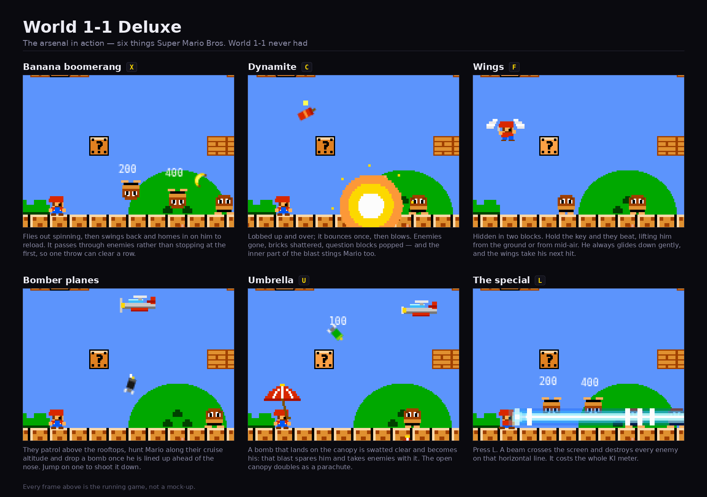

3D modelling and video creation
The scene, the motion and the soundtrack are all generated from code an agent wrote.
INFOTIV · one-day workshop
AI has changed how digital content gets made, from books and software to games and video. This workshop/course is not about the shiniest tools but about how they work underneath, so that you can build with them on purpose instead of by luck.
Why does a language model make things up? Computers are advanced calculators, and large language models follow grammar rules better than most of us. So why is it that LLMs on their own cannot count the r’s in “strawberry” or add two large numbers, yet still beat artists, programmers and mathematicians at their own benchmarks? We look at these weaknesses and at how engineers work around them. We start by training a tiny neural network by hand, then move on to large language models and how to work with them: writing a spec an agent can follow, giving it rules and brakes, running it on real code and checking what it did. There are no magic prompts. The goal is to learn enough to move from vibe coding to agentic engineering.
For people who build, test or are responsible for software:
Both demos, and this page itself, were vibe coded: an AI agent wrote all the code, none of it was written by hand, and they look finished. The workshop is about turning work like this into something you can trust and maintain.
The scene, the motion and the soundtrack are all generated from code an agent wrote.

The classic World 1-1, plus new weapons (banana boomerang, dynamite, laser beam), wings, an umbrella and a new enemy: bomber planes.
New keys: X C F U L
What this day is, and what it is not.
AI, ML and deep learning. We train a tiny neural network by hand.
How a model reads text and writes the next word.
Prompting and writing a spec it can follow.
Giving the model hands.
What to put in front of the model, and what to leave out.
Sandboxes, credentials and poisoned text.
Making things up, bias, tests, review and knowing whether the output is any good.
Real incidents, the EU AI Act and who is responsible.
What you pay for, and running a model yourself.